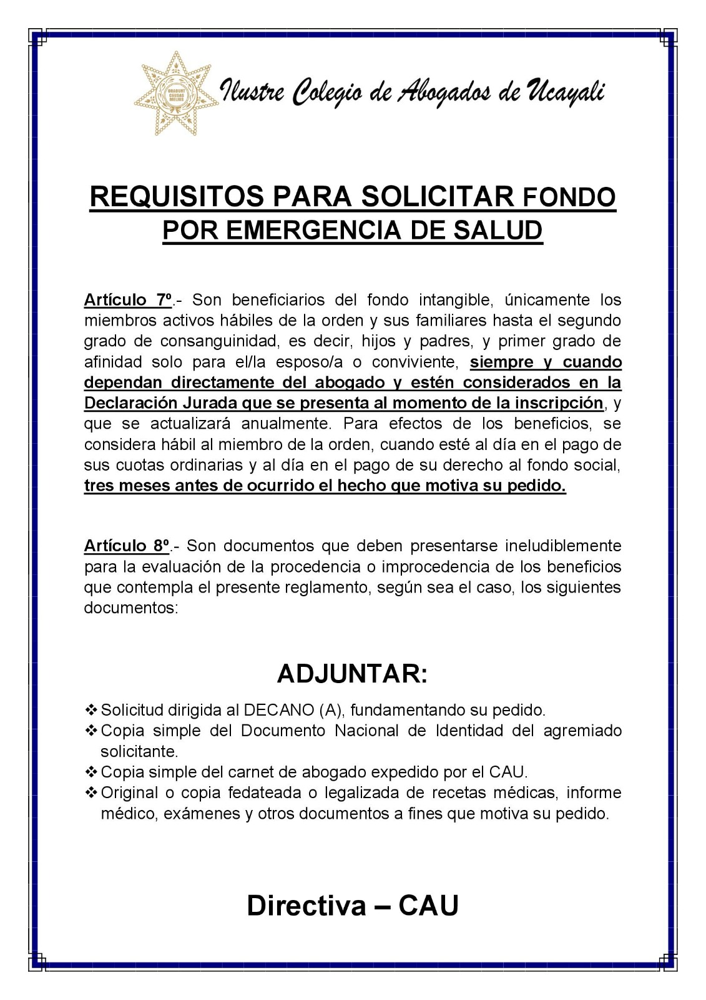
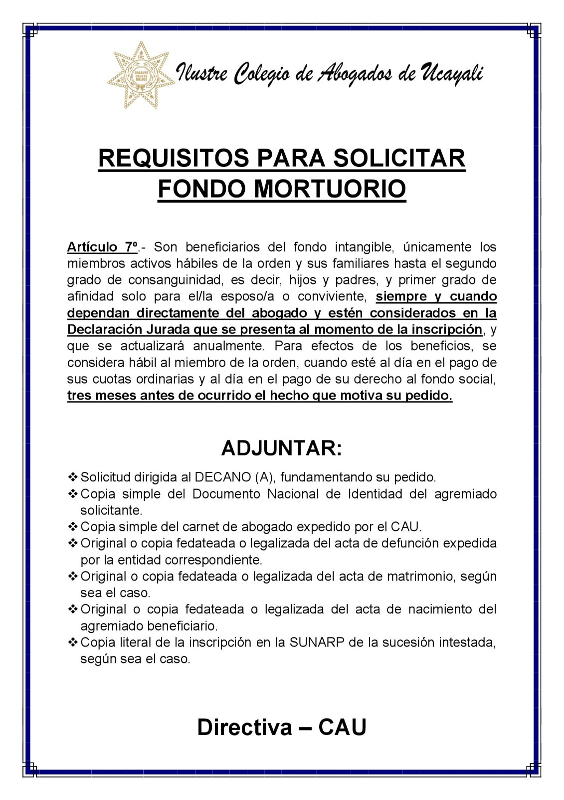

Requisitos para fondos intangibles
Información publicada para solicitudes por emergencia de salud y fondo mortuorio.
Condición general: son beneficiarios los miembros activos hábiles y los familiares considerados en la declaración jurada presentada al inscribirse. El agremiado debe estar al día en sus cuotas y fondo social durante los tres meses anteriores al hecho.
Fondo por emergencia de salud
- Solicitud dirigida al decano o decana, fundamentando el pedido.
- Copia simple del DNI del agremiado solicitante.
- Copia simple del carné de abogado expedido por el CAU.
- Original o copia fedateada o legalizada de recetas médicas, informe médico, exámenes y documentos relacionados con el pedido.
Ver publicación original de emergencia de salud

Fondo mortuorio
- Solicitud dirigida al decano o decana, fundamentando el pedido.
- Copia simple del DNI del agremiado solicitante.
- Copia simple del carné de abogado expedido por el CAU.
- Original o copia fedateada o legalizada del acta de defunción.
- Original o copia fedateada o legalizada del acta de matrimonio, según corresponda.
- Original o copia fedateada o legalizada del acta de nacimiento del agremiado beneficiario.
- Copia literal de la inscripción en SUNARP de la sucesión intestada, según corresponda.
Ver publicación original del fondo mortuorio
